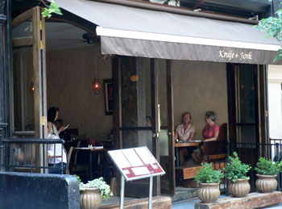

Knife + Fork

Every few months, Nathan agrees to “date night,” when we can have a decadent dinner in any restaurant I want. He thinks that we have a date every night when I make dinner, but every now and then he can be talked into the real thing.
After reading about Knife + Fork several times in the last few weeks in DailyCandy and Eater, and hearing all about their $45 six-course tasting menu, the temptation overwhelmed me and I cashed in my late-spring date.
Knife + Fork has only been open for a few weeks, which is evident every step of the way. The service is so friendly, so cheerful, that upon first meeting our waiter I said to Nathan, “Are we in Pittsburgh?” I can’t imagine they’ll keep that routine up forever, although it was refreshing, and it made us feel that we were in the right place at the right time. The interior is handsome, with thick wooden tables, extremely low lighting (a bit too low, and the reason for the absence of pictures), and Moroccan accents like beaded lampshades and fluffy pillows. The Guy Degrenne flatware is shiny and abundant. Air conditioning would have been welcome, but at least there were fans.
After looking over the regular menu, we quickly decided to go for the tasting, which the waiter explained would be six small portions of regular menu items. This was at 8:30 PM. Our amuse was the much-lauded tomato-tea consommé, served in an espresso cup. It tasted like tomato and tea, and along with some bland Irish soda bread, it held us over until 9:15, when we got our first course, a delicious disk of fresh goat cheese on top of polenta.
Next, and this is where things start to get fuzzy, came the torchon of foie gras. It was served beautifully on a rectangular plate with saffron pineapple, grilled quail, and morels. I knew this was coming, and I’m a staunch defender of this food. But after taking the first bite, and thinking how it was as though meat and butter had a baby on my plate, I switched to the quail. I just can’t make myself enjoy it, and it’s not for ethical reasons.
On the other side of the booth, Nathan had decided he was going to eat the whole thing. Now, Nathan is famously squeamish about liver and kidneys, and he’s been to known to pass out on occasion. Before I knew it, he was using his fluffy pillow as a makeshift fainting couch, and he had broken out in a cold sweat. I removed the offending liver from his plate and sent it back to the waiter as fast as I could, and Nathan slowly came to.
After the foie gras incident, we endured course after course of fish. First came the herb-crusted salmon. Nathan said, “Oh my god—that’s completely raw, isn’t it?” Raw salmon isn’t the first thing the body craves after a foie-gras fainting episode, and this particular salmon wasn’t memorably good or fresh-tasting, and some of its herb crust was gritty.
According to my calculations, we should have been moving on to a digestive salad followed by one or two dessert courses. Ha. Next up was a piece of (thankfully) cooked mackerel atop passion-fruit tapioca with a balsamic glaze. This may have been my favorite course, but it was lost on poor Nathan, who admitted to just wanting a chicken nugget.
Surely at this point, a nice salad was in order. And it came—along with a fat roasted sea scallop, which tasted great, although it was the last thing either of us wanted. When the waiter next presented us with “peppermint-infused Chilean sea bass,” we decided that we were in hell. Four fish dishes in a row is just too much. Nathan actually ate his, but I barely managed two bites, and I found the peppermint oil overpowering.
Finally, at 11:30, our dessert came: a chocolate-peppermint pot de crème. I still had peppermint in my mouth from the sea bass, but I was glad to have something cold and sweet.
Two theories emerge from this dinner, which wasn’t bad at all despite my complaints: First, I am not cut out for tasting menus. I can’t eat that way. With that many different items, I fill up too fast (although this was not the case at Country). And Knife + Fork’s tasting portions are the size of regular portions at other restaurants. We were stuffed half way through. The second observation is that it’s dangerous to have too many strange foods in one sitting. Eating a bit of foie gras before a dinner of roast chicken is doable, but to have that many courses of new flavors, it just stops being fun, and you get chicken-nugget syndrome. It makes me feel like a little kid, wanting to like the food but being scared of what’s coming next.
(Knife + Fork / 108 East 4th Street / New York City, NY 10003 / (212) 228-4885)
Comments
I would like to add that this was not my first foie gras, but it was the most potent by far. Furthermore, I’m accustomed to spreading it on something. In this case there was just a big ol’ “meat-butter baby” on my plate and I was trying to be all sophistiqué by eating it all. Uhh I’ll be right back I think I need to lie down again…
I like the respect you give Pittsburgh restaurants; nothing spoils an eating out experience more than being made to feel like a fool by your server. I have been known to leave before ordering a main course if I don’t like how I’m being treated. Life is too short to pay to be abused, unless I’m in an S&M sex club or something.
But more importantly, the food; it boggles the mind that you were served so many “tastings” of fish! I agree, a tasting menu should consist of just that, a variety of tastes.
Just reading the phrase “peppermint-infused Chilean sea bass” is giving me chicken nugget syndrome.
Nice blog…
Not one for chicken nuggets under any circumstances, but yeah, ‘peppermint-infused Chilean sea bass’ brought up a gag reflex.
When was the last time you folks ate in Pittsburgh? As a former metro NYer now living in Pittsburgh, can’t say I notice great service locally. If anything, there’s sort of a union mentality to every service job around here.
Generally, I think you have to jump at a $45 tasting menu whenever you see one from a place you think you might like… might not always be a winner, but the odds have to be in your favor that something will click.
Hi, Rich—Welcome to Pittsburgh! Not sure if by “sevice” you mean the whole experience, but we have liked the food and the service at Lidia’s, Bona Terra, Eleven, and Asiago.
Of course, here in Pittsburgh good restaurants are few and far between unlike where you come from but at least the prices tend to be a little lower.
Thanks for visiting and commenting on our blog.
Ew,,, gross! I actually like fish, foie gras, everything you’ve mentioned, but I do agree that that many tastings of seafood/fish in a row is a bit much. I really did enjoy my first experience there but that second one was horrendous. And though I like mint and Chilean sea bass… I’m not sure about together (I kind of like my savories savory and my sweets sweet, you know what I mean). Blehhhhh. $45 is a great deal…. if you can stomach the food and perhaps even enjoy it. Ah well.
Add a comment